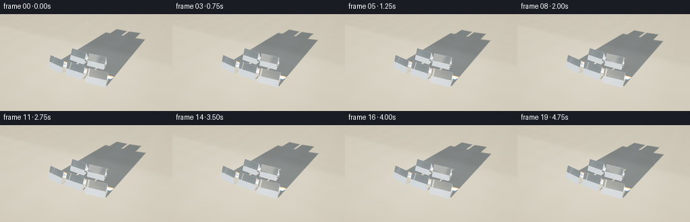
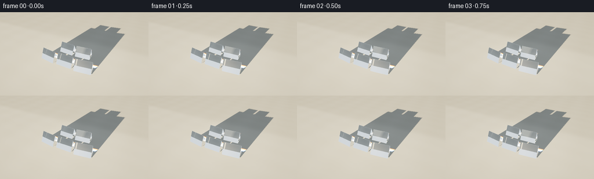
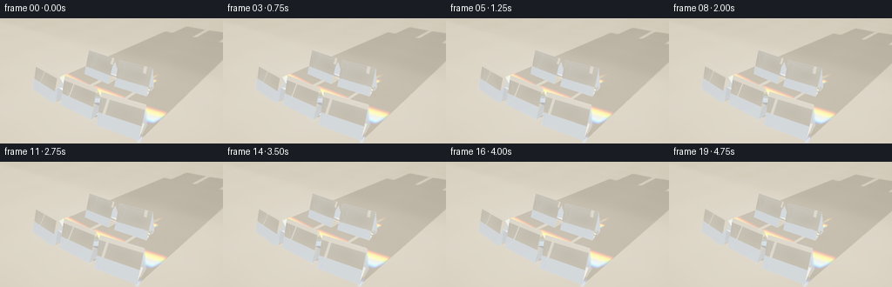
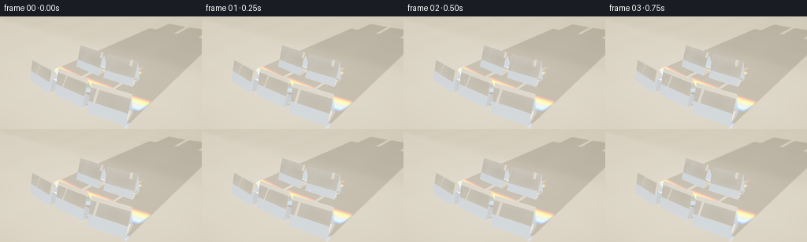
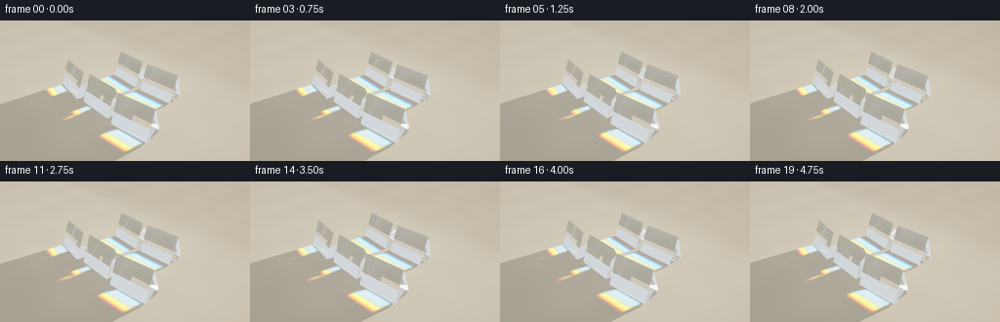
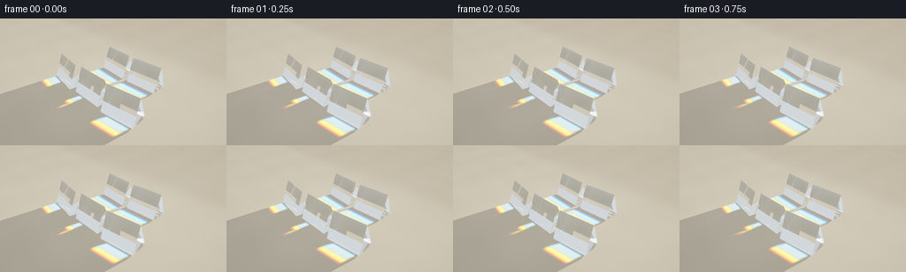
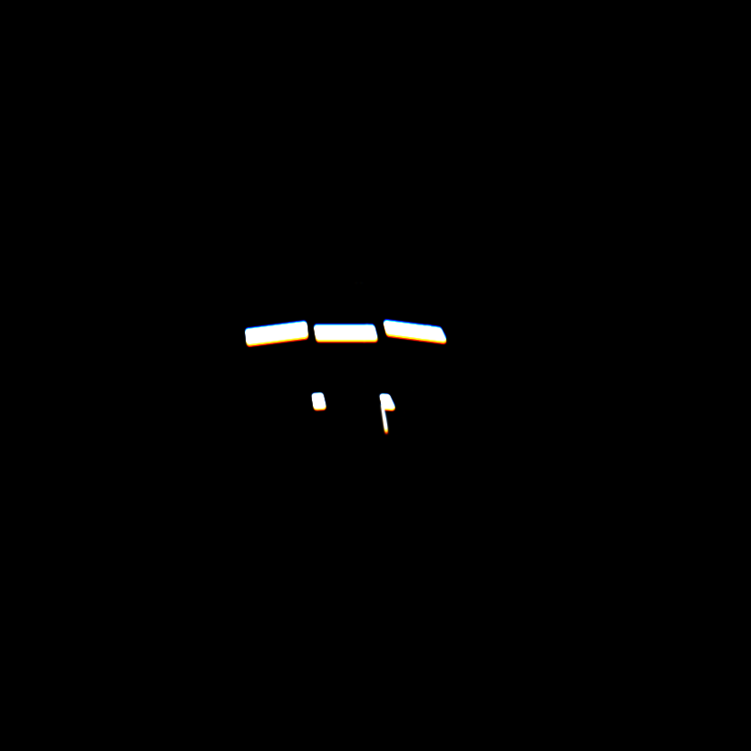
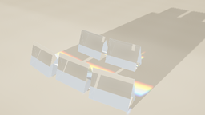

CODING AGENTS AS PIXEL WORLD MODELS
traex/GPT-6.1-Sol · phygen_080
点击播放 · 原生 RGB 像素
逐轮保存的候选
回放视频、检查图与代码变化。
每份候选均可单独播放。实际图片检查记录在下方工具轨迹中。
候选 01播放与检查图
点击播放 · 原生 RGB 像素


展开代码变化
--- 上一保存版本
+++ 本次保存版本
@@ -0,0 +1,278 @@
+"""A small, deterministic spectral ray tracer for an arrangement of optical prisms.
+No external renderer or assets: geometry, refraction and sunlight are computed here.
+"""
+from pathlib import Path
+import math
+import numpy as np
+from PIL import Image
+from scipy.ndimage import gaussian_filter, map_coordinates
+from artifact_io import save
+
+ROOT = Path(__file__).resolve().parent
+W,H = 256,144
+SS = 2
+EPS = 2e-5
+
+def unit(x):
+ x = np.asarray(x,dtype=np.float64)
+ return x / np.maximum(np.linalg.norm(x,axis=-1,keepdims=True),1e-12)
+
+# Five identical polished, triangular optical bars in a staggered 3--2 pattern.
+# The cross section has a 48 degree apex, allowing low sunlight to pass from
+# one oblique polished face to the other, separating wavelengths naturally.
+prisms=[]
+for cx,cy,ang,length in [(-2.0,-1.2,-8,1.72),(0,-1.2,0,1.72),(2.0,-1.2,8,1.72),(-1.0,1.0,-4,1.72),(1.0,1.0,4,1.72)]:
+ a=np.deg2rad(ang)
+ rot=np.array([[np.cos(a),-np.sin(a),0],[np.sin(a),np.cos(a),0],[0,0,1.]])
+ height=1.12; half=height*np.tan(np.deg2rad(24))
+ verts=np.array([[-length/2,-half,.025],[length/2,-half,.025],[-length/2,half,.025],[length/2,half,.025],[-length/2,0,height+.025],[length/2,0,height+.025]]) @ rot.T + [cx,cy,0]
+ faces=[[0,4,5,1],[2,3,5,4],[0,1,3,2],[0,2,4],[1,5,3]]
+ ns=[];ds=[]
+ for f in faces:
+ p=verts[f]; n=unit(np.cross(p[1]-p[0],p[2]-p[0]))
+ if np.dot(n,p.mean(axis=0)-verts.mean(axis=0))<0:n=-n
+ ns.append(n);ds.append(np.dot(n,p[0]))
+ prisms.append((np.array(ns),np.array(ds),verts,faces))
+
+
+def intersect(o,d, far=1e5):
+ """Convex slab intersection; o,d may be arrays with one ray per row."""
+ count=len(o)
+ best=np.full(count,far,dtype=np.float64)
+ norm=np.zeros((count,3)); oid=np.full(count,-1,dtype=np.int16)
+ for k,(ns,ds,_,_) in enumerate(prisms):
+ den=d @ ns.T
+ num=ds[None,:]-o @ ns.T
+ ts=num/np.where(np.abs(den)>1e-10,den,1e-10)
+ entry=np.max(np.where(den < -1e-10,ts,-1e10),axis=1)
+ exit=np.min(np.where(den > 1e-10,ts,1e10),axis=1)
+ possible=np.all((np.abs(den)>1e-10)|(num>=-EPS),axis=1)&(exit>=np.maximum(entry,EPS))
+ inside=entry<EPS
+ tt=np.where(inside,exit,entry)
+ take=possible&(tt<best)&(tt>EPS)
+ face=np.where(inside,np.argmin(np.where(den>1e-10,ts,1e10),axis=1),np.argmax(np.where(den<-1e-10,ts,-1e10),axis=1))
+ best[take]=tt[take];norm[take]=ns[face[take]];oid[take]=k
+ return best,norm,oid
+
+
+def refract(d,n,index):
+ # Surface normals always point out of the glass.
+ exiting=np.sum(d*n,axis=1)>0
+ normal=np.where(exiting[:,None],-n,n)
+ eta=np.where(exiting,index,1/index)
+ cos=np.clip(-np.sum(d*normal,axis=1),0,1)
+ kk=1-eta**2*(1-cos**2)
+ nd=eta[:,None]*d+(eta*cos-np.sqrt(np.maximum(kk,0)))[:,None]*normal
+ rd=d+2*cos[:,None]*normal
+ r0=((index-1)/(index+1))**2
+ fresnel=r0+(1-r0)*(1-cos)**5
+ tir=kk<0
+ return unit(np.where(tir[:,None],rd,nd)),rd,np.where(tir,1,fresnel),tir,exiting
+
+
+def sun_direction(t):
+ # A subtle continuous change in illumination; all objects stay still.
+ return unit([.12+.015*t,1,-.105-.012*t])
+
+MAP_N=840
+MIN=-10.;MAX=12.
+SCALE=(MAP_N-1)/(MAX-MIN)
+
+def spectral_caustics(light):
+ # Sample a parallel bundle across the projected silhouettes. Each photon
+ # is transported through planar glass interfaces with Snell's law.
+ nn=580
+ xx,yy=np.meshgrid(np.linspace(-4.4,4.4,nn),np.linspace(-2.15,2.15,nn))
+ # Define bundle by where it crosses z=.6, rather than a huge remote plane.
+ o=np.stack([xx.ravel(),yy.ravel(),np.full(xx.size,.6)],axis=1)
+ o=o-light[None,:]*30
+ d=np.tile(light,(len(o),1))
+ dd,_,ids=intersect(o,d)
+ hit=ids>=0
+ o=o[hit];d=d[hit]
+ lightmap=np.zeros((MAP_N,MAP_N,3),dtype=np.float64)
+ # Radiometric weights normalized so unobstructed sunlight has unit power.
+ cellarea=(8.8/(nn-1))*(4.3/(nn-1))
+ weight=cellarea*SCALE*SCALE
+ wavelengths=np.linspace(.415,.705,15)
+ colors=[]
+ for wave in wavelengths:
+ # Smooth positive sensor response, narrow spectral caustics stay vivid.
+ c=np.array([np.exp(-.5*((wave-.625)/.050)**2),np.exp(-.5*((wave-.535)/.042)**2),np.exp(-.5*((wave-.455)/.038)**2)])
+ colors.append(c)
+ colors=np.array(colors);colors/=colors.sum(axis=0)
+ for wave,col in zip(wavelengths,colors):
+ index=1.485+.012/(wave*wave)
+ oo=o.copy();dr=d.copy();power=np.ones(len(o))*weight
+ alive=np.ones(len(o),bool)
+ for bounce in range(9):
+ ai=np.flatnonzero(alive)
+ if len(ai)==0:break
+ po=oo[ai];di=dr[ai]
+ dist,norm,ids=intersect(po,di)
+ ground=np.where(di[:,2]<-1e-8,-po[:,2]/di[:,2],1e9)
+ floor=(ground>EPS)&((ground<dist)|(ids<0))&(di[:,2]<0)
+ if floor.any():
+ ind=ai[floor];p=po[floor]+di[floor]*ground[floor,None]
+ ix=np.floor((p[:,0]-MIN)*SCALE).astype(int);iy=np.floor((p[:,1]-MIN)*SCALE).astype(int)
+ valid=(ix>=0)&(ix<MAP_N)&(iy>=0)&(iy<MAP_N)
+ for c in range(3):
+ np.add.at(lightmap[:,:,c],(iy[valid],ix[valid]),power[ind[valid]]*col[c])
+ alive[ind]=False
+ glass=(ids>=0)&~floor
+ if not glass.any():
+ alive[ai]=False;break
+ ind=ai[glass]
+ di=di[glass];nnorm=norm[glass]
+ drnew,ref,fr,tir,exit=refract(di,nnorm,index)
+ power[ind]*=np.where(tir,.96,1-fr)
+ oo[ind]=po[glass]+di*dist[glass,None]+drnew*EPS*4
+ dr[ind]=drnew
+ alive[ai[~glass]]=False
+ # Absorption and a tiny sun-disc blur prevent point-sampling artifacts.
+ for c in range(3):lightmap[:,:,c]=gaussian_filter(lightmap[:,:,c],1.15)
+ return lightmap
+
+
+def env(d):
+ """Warm studio/sunlit room environment with large bright window reflections."""
+ z=d[:,2]
+ amt=np.clip(z*.55+.45,0,1)
+ low=np.array([.33,.29,.24]); high=np.array([.67,.77,.87])
+ rgb=low[None,:]*(1-amt[:,None])+high[None,:]*amt[:,None]
+ # Clear large reflected window, with a couple of mullions.
+ # Soft rectangular source behind the viewer makes glass facets legible.
+ v=unit([-.55,-.62,.55])
+ uvx=d @ unit([.75,-.66,0]);uvy=d @ unit(np.cross(v,[.75,-.66,0]))
+ facing=d @ v
+ window=(facing>.60)&(np.abs(uvx)<.48)&(np.abs(uvy)<.31)
+ soft=np.clip((.48-np.abs(uvx))/.025,0,1)*np.clip((.31-np.abs(uvy))/.025,0,1)*window
+ mullion=(np.abs(uvx)<.017)|(np.abs(uvy)<.011)
+ soft*=np.where(mullion,.25,1)
+ rgb+=soft[:,None]*np.array([2.6,2.45,2.0])
+ sun=unit([-.12,-1,.12])
+ delta=np.clip(d @ sun,0,1)
+ rgb+=((delta**160)*2.5)[:,None]*np.array([1,.80,.54])
+ return rgb
+
+
+def floor_color(p, light, caustic):
+ x,y=p[:,0],p[:,1]
+ # Cream satin limestone, extremely understated irregular stone veins.
+ grain=.003*np.sin(x*136+y*87)+.002*np.sin(x*83-y*172)
+ veining=.008*np.sin(x*1.8+.30*np.sin(y*1.4))+ .005*np.sin(y*3.0+x*.2)
+ base=np.stack([.72+grain+veining,.655+grain+veining,.54+grain+veining],axis=1)
+ ao=np.ones(len(p))
+ for _,_,verts,_ in prisms:
+ mid=verts.mean(axis=0)
+ dist=((x-mid[0])/1.03)**2+((y-mid[1])/.51)**2
+ ao*=1-.19*np.exp(-dist*1.8)
+ # Directional sunlight visibility and soft shadow from finite sun disc.
+ # Deterministic three-ray penumbra.
+ vis=np.zeros(len(p))
+ for off in [-.004,0,.004]:
+ di=unit(-light+np.array([off,0,off*.3]));ds=np.tile(di,(len(p),1))
+ _,_,id=intersect(p+np.array([0,0,EPS*6]),ds)
+ vis+=(id<0)/3
+ coords=np.array([(y-MIN)*SCALE,(x-MIN)*SCALE])
+ ca=np.stack([map_coordinates(caustic[:,:,c],coords,order=1,mode='constant') for c in range(3)],axis=1)
+ # Sunlight and transmitted light share the same radiometric scale.
+ # A wide sunlit pool on the tabletop, corners fall into shade.
+ pool=.82+.18*np.exp(-((x+.3)**2+(y+.2)**2)/24)
+ ambient=np.array([.24,.285,.34])[None,:]*ao[:,None]
+ sunlight=np.array([1.12,.98,.76])[None,:]*pool[:,None]
+ color=base*(ambient+sunlight*(vis[:,None]*.67+ca*.73))
+ # Broad quiet architectural shadow at the far edge of the tabletop.
+ shade=.88+.12/(1+np.exp(np.clip((y-4.3)*4,-30,30)))
+ color*=shade[:,None]
+ return color
+
+
+def ray_color(o,d,light,caustic):
+ n=len(o);color=np.zeros((n,3));through=np.ones((n,3));alive=np.ones(n,bool)
+ for bounce in range(10):
+ ai=np.flatnonzero(alive)
+ if not len(ai):break
+ po=o[ai];di=d[ai]
+ dist,norm,ids=intersect(po,di)
+ ground=np.where(di[:,2]<-1e-7,-po[:,2]/di[:,2],1e9)
+ floor=(ground>EPS)&((ground<dist)|(ids<0))&(di[:,2]<0)
+ if floor.any():
+ ind=ai[floor];p=po[floor]+di[floor]*ground[floor,None]
+ color[ind]+=through[ind]*floor_color(p,light,caustic)
+ alive[ind]=False
+ sky=(ids<0)&~floor
+ if sky.any():
+ ind=ai[sky];color[ind]+=through[ind]*env(di[sky]);alive[ind]=False
+ glass=(ids>=0)&~floor
+ if not glass.any():continue
+ ind=ai[glass];dr=di[glass];no=norm[glass];p=po[glass]+dr*dist[glass,None]
+ nd,rd,fr,tir,exiting=refract(dr,no,1.526)
+ # Reflected illumination from the sun and the large window. Raytrace
+ # reflected ground for reflections under the glasses, not black patches.
+ refl=env(rd)
+ rg=np.where(rd[:,2]<-1e-7,-p[:,2]/rd[:,2],1e9)
+ reflects_floor=(rg>EPS)&(rg<30)&~exiting
+ if reflects_floor.any():
+ pp=p[reflects_floor]+rd[reflects_floor]*rg[reflects_floor,None]
+ refl[reflects_floor]=floor_color(pp,light,caustic)
+ color[ind]+=through[ind]*np.where(tir,0,fr)[:,None]*refl
+ through[ind]*=np.where(tir,.992,1-fr)[:,None]*np.array([.993,.998,.999])
+ # A very fine polished bevel edge highlights the boundaries. Distance
+ # to the second nearest plane produces a physical thin edge band.
+ edge=np.zeros(len(ind))
+ for k,(ns,ds,_,_) in enumerate(prisms):
+ sel=ids[glass]==k
+ if not sel.any():continue
+ dd=np.abs(p[sel] @ ns.T-ds)
+ dd.sort(axis=1)
+ edge[sel]=np.exp(-((dd[:,1])/.011)**2)
+ glint=edge*.10*(.35+.65*np.maximum(0,no @ unit([-.6,-.6,1])))
+ color[ind]+=through[ind]*glint[:,None]*np.array([.88,.98,1.06])
+ o[ind]=p+nd*EPS*5;d[ind]=nd
+ alive[ind]=np.max(through[ind],axis=1)>.015
+ if alive.any():color[alive]+=through[alive]*env(d[alive])
+ return color
+
+
+def render(frame,caustic):
+ t=frame/19
+ # A restrained cinematic arc, not object motion, reveals each glass face.
+ cam=np.array([5.5+.32*t,-9.6+.28*t,7.7-.15*t])
+ target=np.array([0,.65,.20])
+ forward=unit(target-cam);right=unit(np.cross(forward,[0,0,1]));up=unit(np.cross(right,forward))
+ ww,hh=W*SS,H*SS
+ xx,yy=np.meshgrid((np.arange(ww)+.5)/ww*2-1,1-(np.arange(hh)+.5)/hh*2)
+ scale=np.tan(np.deg2rad(38)/2)
+ d=unit(forward[None,:]+xx.reshape(-1,1)*right*(ww/hh)*scale+yy.reshape(-1,1)*up*scale)
+ o=np.tile(cam,(len(d),1))
+ # Work in strips to keep ray-tracing memory bounded.
+ light=sun_direction(t)
+ pieces=[]
+ for start in range(0,len(d),24576):
+ pieces.append(ray_color(o[start:start+24576].copy(),d[start:start+24576].copy(),light,caustic))
+ rgb=np.concatenate(pieces).reshape(hh,ww,3)
+ # Subtle vignette and photographic highlight roll-off.
+ vig=1-.10*(xx**2*.55+yy**2*.65)
+ rgb*=vig[:,:,None]
+ # Filmic tone curve, preserves saturated spectral colors while rolling
+ # intense caustics and white glass edge highlights smoothly.
+ rgb=(rgb*(2.51*rgb+.03))/(rgb*(2.43*rgb+.59)+.14)
+ rgb=np.clip(rgb,0,1)**(1/2.2)
+ im=Image.fromarray(np.uint8(rgb*255+.5)).resize((W,H),Image.Resampling.LANCZOS)
+ return np.array(im)
+
+
+def main():
+ print('Computing spectral sunlight transport...',flush=True)
+ ca0=spectral_caustics(sun_direction(0))
+ ca1=spectral_caustics(sun_direction(1))
+ frames=[]
+ for i in range(20):
+ t=i/19
+ frames.append(render(i,ca0*(1-t)+ca1*t))
+ print('Rendered frame',i,flush=True)
+ save(np.stack(frames).astype(np.uint8),ROOT)
+ print('Saved RGB video and preview artifacts.',flush=True)
+
+if __name__=='__main__':main()
候选 02播放与检查图
点击播放 · 原生 RGB 像素


展开代码变化
--- 上一保存版本
+++ 本次保存版本
@@ -21,10 +21,10 @@
# The cross section has a 48 degree apex, allowing low sunlight to pass from
# one oblique polished face to the other, separating wavelengths naturally.
prisms=[]
-for cx,cy,ang,length in [(-2.0,-1.2,-8,1.72),(0,-1.2,0,1.72),(2.0,-1.2,8,1.72),(-1.0,1.0,-4,1.72),(1.0,1.0,4,1.72)]:
+for cx,cy,ang,length in [(-2.0,-1.5,-8,1.72),(0,-1.5,0,1.72),(2.0,-1.5,8,1.72),(-1.0,1.15,-4,1.72),(1.0,1.15,4,1.72)]:
a=np.deg2rad(ang)
rot=np.array([[np.cos(a),-np.sin(a),0],[np.sin(a),np.cos(a),0],[0,0,1.]])
- height=1.12; half=height*np.tan(np.deg2rad(24))
+ height=1.25; half=height*np.tan(np.deg2rad(20))
verts=np.array([[-length/2,-half,.025],[length/2,-half,.025],[-length/2,half,.025],[length/2,half,.025],[-length/2,0,height+.025],[length/2,0,height+.025]]) @ rot.T + [cx,cy,0]
faces=[[0,4,5,1],[2,3,5,4],[0,1,3,2],[0,2,4],[1,5,3]]
ns=[];ds=[]
@@ -81,8 +81,8 @@
def spectral_caustics(light):
# Sample a parallel bundle across the projected silhouettes. Each photon
# is transported through planar glass interfaces with Snell's law.
- nn=580
- xx,yy=np.meshgrid(np.linspace(-4.4,4.4,nn),np.linspace(-2.15,2.15,nn))
+ nn=740
+ xx,yy=np.meshgrid(np.linspace(-4.4,4.4,nn),np.linspace(-2.65,2.65,nn))
# Define bundle by where it crosses z=.6, rather than a huge remote plane.
o=np.stack([xx.ravel(),yy.ravel(),np.full(xx.size,.6)],axis=1)
o=o-light[None,:]*30
@@ -92,7 +92,7 @@
o=o[hit];d=d[hit]
lightmap=np.zeros((MAP_N,MAP_N,3),dtype=np.float64)
# Radiometric weights normalized so unobstructed sunlight has unit power.
- cellarea=(8.8/(nn-1))*(4.3/(nn-1))
+ cellarea=(8.8/(nn-1))*(5.3/(nn-1))
weight=cellarea*SCALE*SCALE
wavelengths=np.linspace(.415,.705,15)
colors=[]
@@ -102,7 +102,7 @@
colors.append(c)
colors=np.array(colors);colors/=colors.sum(axis=0)
for wave,col in zip(wavelengths,colors):
- index=1.485+.012/(wave*wave)
+ index=1.43+.048/(wave*wave)
oo=o.copy();dr=d.copy();power=np.ones(len(o))*weight
alive=np.ones(len(o),bool)
for bounce in range(9):
@@ -179,9 +179,11 @@
# Sunlight and transmitted light share the same radiometric scale.
# A wide sunlit pool on the tabletop, corners fall into shade.
pool=.82+.18*np.exp(-((x+.3)**2+(y+.2)**2)/24)
- ambient=np.array([.24,.285,.34])[None,:]*ao[:,None]
- sunlight=np.array([1.12,.98,.76])[None,:]*pool[:,None]
- color=base*(ambient+sunlight*(vis[:,None]*.67+ca*.73))
+ ambient=np.array([.43,.435,.44])[None,:]*ao[:,None]
+ sunlight=np.array([1.05,.91,.72])[None,:]*pool[:,None]
+ white=np.min(ca,axis=1,keepdims=True)
+ ca=white*.20+np.maximum(ca-white*.92,0)*1.55
+ color=base*(ambient+sunlight*(.20+vis[:,None]*.46+ca*.67))
# Broad quiet architectural shadow at the far edge of the tabletop.
shade=.88+.12/(1+np.exp(np.clip((y-4.3)*4,-30,30)))
color*=shade[:,None]
@@ -238,12 +240,12 @@
def render(frame,caustic):
t=frame/19
# A restrained cinematic arc, not object motion, reveals each glass face.
- cam=np.array([5.5+.32*t,-9.6+.28*t,7.7-.15*t])
- target=np.array([0,.65,.20])
+ cam=np.array([5.2+.22*t,-6.7+.20*t,5.5-.12*t])
+ target=np.array([0,.65,.27])
forward=unit(target-cam);right=unit(np.cross(forward,[0,0,1]));up=unit(np.cross(right,forward))
ww,hh=W*SS,H*SS
xx,yy=np.meshgrid((np.arange(ww)+.5)/ww*2-1,1-(np.arange(hh)+.5)/hh*2)
- scale=np.tan(np.deg2rad(38)/2)
+ scale=np.tan(np.deg2rad(33)/2)
d=unit(forward[None,:]+xx.reshape(-1,1)*right*(ww/hh)*scale+yy.reshape(-1,1)*up*scale)
o=np.tile(cam,(len(d),1))
# Work in strips to keep ray-tracing memory bounded.
候选 03播放与检查图
点击播放 · 原生 RGB 像素


展开代码变化
--- 上一保存版本
+++ 本次保存版本
@@ -72,7 +72,7 @@
def sun_direction(t):
# A subtle continuous change in illumination; all objects stay still.
- return unit([.12+.015*t,1,-.105-.012*t])
+ return unit([-.10-.015*t,-1,-.095-.010*t])
MAP_N=840
MIN=-10.;MAX=12.
@@ -150,7 +150,7 @@
mullion=(np.abs(uvx)<.017)|(np.abs(uvy)<.011)
soft*=np.where(mullion,.25,1)
rgb+=soft[:,None]*np.array([2.6,2.45,2.0])
- sun=unit([-.12,-1,.12])
+ sun=unit([.10,1,.10])
delta=np.clip(d @ sun,0,1)
rgb+=((delta**160)*2.5)[:,None]*np.array([1,.80,.54])
return rgb
@@ -161,7 +161,7 @@
# Cream satin limestone, extremely understated irregular stone veins.
grain=.003*np.sin(x*136+y*87)+.002*np.sin(x*83-y*172)
veining=.008*np.sin(x*1.8+.30*np.sin(y*1.4))+ .005*np.sin(y*3.0+x*.2)
- base=np.stack([.72+grain+veining,.655+grain+veining,.54+grain+veining],axis=1)
+ base=np.stack([.57+grain+veining,.51+grain+veining,.405+grain+veining],axis=1)
ao=np.ones(len(p))
for _,_,verts,_ in prisms:
mid=verts.mean(axis=0)
@@ -179,10 +179,10 @@
# Sunlight and transmitted light share the same radiometric scale.
# A wide sunlit pool on the tabletop, corners fall into shade.
pool=.82+.18*np.exp(-((x+.3)**2+(y+.2)**2)/24)
- ambient=np.array([.43,.435,.44])[None,:]*ao[:,None]
+ ambient=np.array([.33,.37,.42])[None,:]*ao[:,None]
sunlight=np.array([1.05,.91,.72])[None,:]*pool[:,None]
white=np.min(ca,axis=1,keepdims=True)
- ca=white*.20+np.maximum(ca-white*.92,0)*1.55
+ ca=white*.14+np.maximum(ca-white*.97,0)*1.95
color=base*(ambient+sunlight*(.20+vis[:,None]*.46+ca*.67))
# Broad quiet architectural shadow at the far edge of the tabletop.
shade=.88+.12/(1+np.exp(np.clip((y-4.3)*4,-30,30)))
@@ -240,12 +240,12 @@
def render(frame,caustic):
t=frame/19
# A restrained cinematic arc, not object motion, reveals each glass face.
- cam=np.array([5.2+.22*t,-6.7+.20*t,5.5-.12*t])
- target=np.array([0,.65,.27])
+ cam=np.array([7.2+.20*t,-6.8+.20*t,6.2-.10*t])
+ target=np.array([0,-.2,.25])
forward=unit(target-cam);right=unit(np.cross(forward,[0,0,1]));up=unit(np.cross(right,forward))
ww,hh=W*SS,H*SS
xx,yy=np.meshgrid((np.arange(ww)+.5)/ww*2-1,1-(np.arange(hh)+.5)/hh*2)
- scale=np.tan(np.deg2rad(33)/2)
+ scale=np.tan(np.deg2rad(32)/2)
d=unit(forward[None,:]+xx.reshape(-1,1)*right*(ww/hh)*scale+yy.reshape(-1,1)*up*scale)
o=np.tile(cam,(len(d),1))
# Work in strips to keep ray-tracing memory bounded.
可观测工具轨迹
实际执行的命令与返回图片。
命令 1exit 0
/bin/bash -lc "ls -la && cat prompt.txt && printf '\\n---RULES---\\n' && cat GENERATION_RULES.md && printf '\\n---SPEC---\\n' && cat task_spec.json"
命令 2exit 0
/bin/bash -lc "cat artifact_io.py && python - <<'PY'
import numpy, PIL
print('numpy/PIL available')
PY"命令 3exit 0
/bin/bash -lc "python - <<'PY' import importlib.util for m in ['scipy','numba']: print(m, bool(importlib.util.find_spec(m))) PY"
命令 4exit 0
/bin/bash -lc "cat > generate.py <<'PY'
\"\"\"A small, deterministic spectral ray tracer for an arrangement of optical prisms.
No external renderer or assets: geometry, refraction and sunlight are computed here.
\"\"\"
from pathlib import Path
import math
import numpy as np
from PIL import Image
from scipy.ndimage import gaussian_filter, map_coordinates
from artifact_io import save
ROOT = Path(__file__).resolve().parent
W,H = 256,144
SS = 2
EPS = 2e-5
def unit(x):
x = np.asarray(x,dtype=np.float64)
return x / np.maximum(np.linalg.norm(x,axis=-1,keepdims=True),1e-12)
# Five identical polished, triangular optical bars in a staggered 3--2 pattern.
# The cross section has a 48 degree apex, allowing low sunlight to pass from
# one oblique polished face to the other, separating wavelengths naturally.
prisms=[]
for cx,cy,ang,length in [(-2.0,-1.2,-8,1.72),(0,-1.2,0,1.72),(2.0,-1.2,8,1.72),(-1.0,1.0,-4,1.72),(1.0,1.0,4,1.72)]:
a=np.deg2rad(ang)
rot=np.array([[np.cos(a),-np.sin(a),0],[np.sin(a),np.cos(a),0],[0,0,1.]])
height=1.12; half=height*np.tan(np.deg2rad(24))
verts=np.array([[-length/2,-half,.025],[length/2,-half,.025],[-length/2,half,.025],[length/2,half,.025],[-length/2,0,height+.025],[length/2,0,height+.025]]) @ rot.T + [cx,cy,0]
faces=[[0,4,5,1],[2,3,5,4],[0,1,3,2],[0,2,4],[1,5,3]]
ns=[];ds=[]
for f in faces:
p=verts[f]; n=unit(np.cross(p[1]-p[0],p[2]-p[0]))
if np.dot(n,p.mean(axis=0)-verts.mean(axis=0))<0:n=-n
ns.append(n);ds.append(np.dot(n,p[0]))
prisms.append((np.array(ns),np.array(ds),verts,faces))
def intersect(o,d, far=1e5):
\"\"\"Convex slab intersection; o,d may be arrays with one ray per row.\"\"\"
count=len(o)
best=np.full(count,far,dtype=np.float64)
norm=np.zeros((count,3)); oid=np.full(count,-1,dtype=np.int16)
for k,(ns,ds,_,_) in enumerate(prisms):
den=d @ ns.T
num=ds[None,:]-o @ ns.T
ts=num/np.where(np.abs(den)>1e-10,den,1e-10)
entry=np.max(np.where(den < -1e-10,ts,-1e10),axis=1)
exit=np.min(np.where(den > 1e-10,ts,1e10),axis=1)
possible=np.all((np.abs(den)>1e-10)|(num>=-EPS),axis=1)&(exit>=np.maximum(entry,EPS))
inside=entry<EPS
tt=np.where(inside,exit,entry)
take=possible&(tt<best)&(tt>EPS)
face=np.where(inside,np.argmin(np.where(den>1e-10,ts,1e10),axis=1),np.argmax(np.where(den<-1e-10,ts,-1e10),axis=1))
best[take]=tt[take];norm[take]=ns[face[take]];oid[take]=k
return best,norm,oid
def refract(d,n,index):
# Surface normals always point out of the glass.
exiting=np.sum(d*n,axis=1)>0
normal=np.where(exiting[:,None],-n,n)
eta=np.where(exiting,index,1/index)
cos=np.clip(-np.sum(d*normal,axis=1),0,1)
kk=1-eta**2*(1-cos**2)
nd=eta[:,None]*d+(eta*cos-np.sqrt(np.maximum(kk,0)))[:,None]*normal
rd=d+2*cos[:,None]*normal
r0=((index-1)/(index+1))**2
fresnel=r0+(1-r0)*(1-cos)**5
tir=kk<0
return unit(np.where(tir[:,None],rd,nd)),rd,np.where(tir,1,fresnel),tir,exiting
def sun_direction(t):
# A subtle continuous change in illumination; all objects stay still.
return unit([.12+.015*t,1,-.105-.012*t])
MAP_N=840
MIN=-10.;MAX=12.
SCALE=(MAP_N-1)/(MAX-MIN)
def spectral_caustics(light):
# Sample a parallel bundle across the projected silhouettes. Each photon
# is transported through planar glass interfaces with Snell's law.
nn=580
xx,yy=np.meshgrid(np.linspace(-4.4,4.4,nn),np.linspace(-2.15,2.15,nn))
# Define bundle by where it crosses z=.6, rather than a huge remote plane.
o=np.stack([xx.ravel(),yy.ravel(),np.full(xx.size,.6)],axis=1)
o=o-light[None,:]*30
d=np.tile(light,(len(o),1))
dd,_,ids=intersect(o,d)
hit=ids>=0
o=o[hit];d=d[hit]
lightmap=np.zeros((MAP_N,MAP_N,3),dtype=np.float64)
# Radiometric weights normalized so unobstructed sunlight has unit power.
cellarea=(8.8/(nn-1))*(4.3/(nn-1))
weight=cellarea*SCALE*SCALE
wavelengths=np.linspace(.415,.705,15)
colors=[]
for wave in wavelengths:
# Smooth positive sensor response, narrow spectral caustics stay vivid.
c=np.array([np.exp(-.5*((wave-.625)/.050)**2),np.exp(-.5*((wave-.535)/.042)**2),np.exp(-.5*((wave-.455)/.038)**2)])
colors.append(c)
colors=np.array(colors);colors/=colors.sum(axis=0)
for wave,col in zip(wavelengths,colors):
index=1.485+.012/(wave*wave)
oo=o.copy();dr=d.copy();power=np.ones(len(o))*weight
alive=np.ones(len(o),bool)
for bounce in range(9):
ai=np.flatnonzero(alive)
if len(ai)==0:break
po=oo[ai];di=dr[ai]
dist,norm,ids=intersect(po,di)
ground=np.where(di[:,2]<-1e-8,-po[:,2]/di[:,2],1e9)
floor=(ground>EPS)&((ground<dist)|(ids<0))&(di[:,2]<0)
if floor.any():
ind=ai[floor];p=po[floor]+di[floor]*ground[floor,None]
ix=np.floor((p[:,0]-MIN)*SCALE).astype(int);iy=np.floor((p[:,1]-MIN)*SCALE).astype(int)
valid=(ix>=0)&(ix<MAP_N)&(iy>=0)&(iy<MAP_N)
for c in range(3):
np.add.at(lightmap[:,:,c],(iy[valid],ix[valid]),power[ind[valid]]*col[c])
alive[ind]=False
glass=(ids>=0)&~floor
if not glass.any():
alive[ai]=False;break
ind=ai[glass]
di=di[glass];nnorm=norm[glass]
drnew,ref,fr,tir,exit=refract(di,nnorm,index)
power[ind]*=np.where(tir,.96,1-fr)
oo[ind]=po[glass]+di*dist[glass,None]+drnew*EPS*4
dr[ind]=drnew
alive[ai[~glass]]=False
# Absorption and a tiny sun-disc blur prevent point-sampling artifacts.
for c in range(3):lightmap[:,:,c]=gaussian_filter(lightmap[:,:,c],1.15)
return lightmap
def env(d):
\"\"\"Warm studio/sunlit room environment with large bright window reflections.\"\"\"
z=d[:,2]
amt=np.clip(z*.55+.45,0,1)
low=np.array([.33,.29,.24]); high=np.array([.67,.77,.87])
rgb=low[None,:]*(1-amt[:,None])+high[None,:]*amt[:,None]
# Clear large reflected window, with a couple of mullions.
# Soft rectangular source behind the viewer makes glass facets legible.
v=unit([-.55,-.62,.55])
uvx=d @ unit([.75,-.66,0]);uvy=d @ unit(np.cross(v,[.75,-.66,0]))
facing=d @ v
window=(facing>.60)&(np.abs(uvx)<.48)&(np.abs(uvy)<.31)
soft=np.clip((.48-np.abs(uvx))/.025,0,1)*np.clip((.31-np.abs(uvy))/.025,0,1)*window
mullion=(np.abs(uvx)<.017)|(np.abs(uvy)<.011)
soft*=np.where(mullion,.25,1)
rgb+=soft[:,None]*np.array([2.6,2.45,2.0])
sun=unit([-.12,-1,.12])
delta=np.clip(d @ sun,0,1)
rgb+=((delta**160)*2.5)[:,None]*np.array([1,.80,.54])
return rgb
def floor_color(p, light, caustic):
x,y=p[:,0],p[:,1]
# Cream satin limestone, extremely understated irregular stone veins.
grain=.003*np.sin(x*136+y*87)+.002*np.sin(x*83-y*172)
veining=.008*np.sin(x*1.8+.30*np.sin(y*1.4))+ .005*np.sin(y*3.0+x*.2)
base=np.stack([.72+grain+veining,.655+grain+veining,.54+grain+veining],axis=1)
ao=np.ones(len(p))
for _,_,verts,_ in prisms:
mid=verts.mean(axis=0)
dist=((x-mid[0])/1.03)**2+((y-mid[1])/.51)**2
ao*=1-.19*np.exp(-dist*1.8)
# Directional sunlight visibility and soft shadow from finite sun disc.
# Deterministic three-ray penumbra.
vis=np.zeros(len(p))
for off in [-.004,0,.004]:
di=unit(-light+np.array([off,0,off*.3]));ds=np.tile(di,(len(p),1))
_,_,id=intersect(p+np.array([0,0,EPS*6]),ds)
vis+=(id<0)/3
coords=np.array([(y-MIN)*SCALE,(x-MIN)*SCALE])
ca=np.stack([map_coordinates(caustic[:,:,c],coords,order=1,mode='constant') for c in range(3)],axis=1)
# Sunlight and transmitted light share the same radiometric scale.
# A wide sunlit pool on the tabletop, corners fall into shade.
pool=.82+.18*np.exp(-((x+.3)**2+(y+.2)**2)/24)
ambient=np.array([.24,.285,.34])[None,:]*ao[:,None]
sunlight=np.array([1.12,.98,.76])[None,:]*pool[:,None]
color=base*(ambient+sunlight*(vis[:,None]*.67+ca*.73))
# Broad quiet architectural shadow at the far edge of the tabletop.
shade=.88+.12/(1+np.exp(np.clip((y-4.3)*4,-30,30)))
color*=shade[:,None]
return color
def ray_color(o,d,light,caustic):
n=len(o);color=np.zeros((n,3));through=np.ones((n,3));alive=np.ones(n,bool)
for bounce in range(10):
ai=np.flatnonzero(alive)
if not len(ai):break
po=o[ai];di=d[ai]
dist,norm,ids=intersect(po,di)
ground=np.where(di[:,2]<-1e-7,-po[:,2]/di[:,2],1e9)
floor=(ground>EPS)&((ground<dist)|(ids<0))&(di[:,2]<0)
if floor.any():
ind=ai[floor];p=po[floor]+di[floor]*ground[floor,None]
color[ind]+=through[ind]*floor_color(p,light,caustic)
alive[ind]=False
sky=(ids<0)&~floor
if sky.any():
ind=ai[sky];color[ind]+=through[ind]*env(di[sky]);alive[ind]=False
glass=(ids>=0)&~floor
if not glass.any():continue
ind=ai[glass];dr=di[glass];no=norm[glass];p=po[glass]+dr*dist[glass,None]
nd,rd,fr,tir,exiting=refract(dr,no,1.526)
# Reflected illumination from the sun and the large window. Raytrace
# reflected ground for reflections under the glasses, not black patches.
refl=env(rd)
rg=np.where(rd[:,2]<-1e-7,-p[:,2]/rd[:,2],1e9)
reflects_floor=(rg>EPS)&(rg<30)&~exiting
if reflects_floor.any():
pp=p[reflects_floor]+rd[reflects_floor]*rg[reflects_floor,None]
refl[reflects_floor]=floor_color(pp,light,caustic)
color[ind]+=through[ind]*np.where(tir,0,fr)[:,None]*refl
through[ind]*=np.where(tir,.992,1-fr)[:,None]*np.array([.993,.998,.999])
# A very fine polished bevel edge highlights the boundaries. Distance
# to the second nearest plane produces a physical thin edge band.
edge=np.zeros(len(ind))
for k,(ns,ds,_,_) in enumerate(prisms):
sel=ids[glass]==k
if not sel.any():continue
dd=np.abs(p[sel] @ ns.T-ds)
dd.sort(axis=1)
edge[sel]=np.exp(-((dd[:,1])/.011)**2)
glint=edge*.10*(.35+.65*np.maximum(0,no @ unit([-.6,-.6,1])))
color[ind]+=through[ind]*glint[:,None]*np.array([.88,.98,1.06])
o[ind]=p+nd*EPS*5;d[ind]=nd
alive[ind]=np.max(through[ind],axis=1)>.015
if alive.any():color[alive]+=through[alive]*env(d[alive])
return color
def render(frame,caustic):
t=frame/19
# A restrained cinematic arc, not object motion, reveals each glass face.
cam=np.array([5.5+.32*t,-9.6+.28*t,7.7-.15*t])
target=np.array([0,.65,.20])
forward=unit(target-cam);right=unit(np.cross(forward,[0,0,1]));up=unit(np.cross(right,forward))
ww,hh=W*SS,H*SS
xx,yy=np.meshgrid((np.arange(ww)+.5)/ww*2-1,1-(np.arange(hh)+.5)/hh*2)
scale=np.tan(np.deg2rad(38)/2)
d=unit(forward[None,:]+xx.reshape(-1,1)*right*(ww/hh)*scale+yy.reshape(-1,1)*up*scale)
o=np.tile(cam,(len(d),1))
# Work in strips to keep ray-tracing memory bounded.
light=sun_direction(t)
pieces=[]
for start in range(0,len(d),24576):
pieces.append(ray_color(o[start:start+24576].copy(),d[start:start+24576].copy(),light,caustic))
rgb=np.concatenate(pieces).reshape(hh,ww,3)
# Subtle vignette and photographic highlight roll-off.
vig=1-.10*(xx**2*.55+yy**2*.65)
rgb*=vig[:,:,None]
# Filmic tone curve, preserves saturated spectral colors while rolling
# intense caustics and white glass edge highlights smoothly.
rgb=(rgb*(2.51*rgb+.03))/(rgb*(2.43*rgb+.59)+.14)
rgb=np.clip(rgb,0,1)**(1/2.2)
im=Image.fromarray(np.uint8(rgb*255+.5)).resize((W,H),Image.Resampling.LANCZOS)
return np.array(im)
def main():
print('Computing spectral sunlight transport...',flush=True)
ca0=spectral_caustics(sun_direction(0))
ca1=spectral_caustics(sun_direction(1))
frames=[]
for i in range(20):
t=i/19
frames.append(render(i,ca0*(1-t)+ca1*t))
print('Rendered frame',i,flush=True)
save(np.stack(frames).astype(np.uint8),ROOT)
print('Saved RGB video and preview artifacts.',flush=True)
if __name__=='__main__':main()
PY
OPENBLAS_NUM_THREADS=1 OMP_NUM_THREADS=1 python generate.py"命令 5exit 0
/bin/bash -lc "OPENBLAS_NUM_THREADS=1 python - <<'PY'
import generate as g
import numpy as np
l=g.sun_direction(0)
o=np.array([[0,-31,3.9]])
d=np.tile(l,(1,1))
for i in range(7):
dist,n,ids=g.intersect(o,d)
print('hit',i,dist,n,ids,'d',d)
if ids[0]<0:break
p=o+d*dist[:,None];print('p',p)
d,r,fr,tir,ex=g.refract(d,n,1.53);print('new',d,'tir',tir)
o=p+d*.0001
ca=g.spectral_caustics(l)
print('max',ca.max(),'nonzero',np.count_nonzero(ca),'sum',ca.sum())
from PIL import Image
Image.fromarray(np.uint8(np.clip(ca*2,0,1)*255)).save('.tmp/ca.png')
PY"命令 6exit 0
/bin/bash -lc "python - <<'PY'
p='generate.py'
s=open(p).read().replace('height=1.12; half=height*np.tan(np.deg2rad(24))','height=1.25; half=height*np.tan(np.deg2rad(20))')
s=s.replace(\"(-2.0,-1.2,-8,1.72),(0,-1.2,0,1.72),(2.0,-1.2,8,1.72),(-1.0,1.0,-4,1.72),(1.0,1.0,4,1.72)\",\"(-2.0,-1.5,-8,1.72),(0,-1.5,0,1.72),(2.0,-1.5,8,1.72),(-1.0,1.15,-4,1.72),(1.0,1.15,4,1.72)\")
s=s.replace('index=1.485+.012/(wave*wave)','index=1.43+.048/(wave*wave)')
s=s.replace('cam=np.array([5.5+.32*t,-9.6+.28*t,7.7-.15*t])','cam=np.array([5.2+.22*t,-6.7+.20*t,5.5-.12*t])')
s=s.replace('target=np.array([0,.65,.20])','target=np.array([0,.65,.27])')
s=s.replace('np.deg2rad(38)','np.deg2rad(33)')
s=s.replace('ambient=np.array([.24,.285,.34])','ambient=np.array([.43,.435,.44])')
s=s.replace('sunlight=np.array([1.12,.98,.76])','sunlight=np.array([1.05,.91,.72])')
s=s.replace('color=base*(ambient+sunlight*(vis[:,None]*.67+ca*.73))','white=np.min(ca,axis=1,keepdims=True)\\n ca=white*.20+np.maximum(ca-white*.92,0)*1.55\\n color=base*(ambient+sunlight*(.20+vis[:,None]*.46+ca*.67))')
s=s.replace('nn=580','nn=740')
# The beam must cover the whole slightly taller arrangement.
s=s.replace('np.linspace(-2.15,2.15,nn)','np.linspace(-2.65,2.65,nn)').replace('(4.3/(nn-1))','(5.3/(nn-1))')
open(p,'w').write(s)
PY
OPENBLAS_NUM_THREADS=1 OMP_NUM_THREADS=1 python generate.py"命令 7exit 0
/bin/bash -lc "python - <<'PY'
p='generate.py';s=open(p).read()
s=s.replace('return unit([.12+.015*t,1,-.105-.012*t])','return unit([-.10-.015*t,-1,-.095-.010*t])')
s=s.replace('sun=unit([-.12,-1,.12])','sun=unit([.10,1,.10])')
s=s.replace('cam=np.array([5.2+.22*t,-6.7+.20*t,5.5-.12*t])','cam=np.array([7.2+.20*t,-6.8+.20*t,6.2-.10*t])')
s=s.replace('target=np.array([0,.65,.27])','target=np.array([0,-.2,.25])')
s=s.replace('np.deg2rad(33)','np.deg2rad(32)')
s=s.replace('base=np.stack([.72+grain+veining,.655+grain+veining,.54+grain+veining],axis=1)','base=np.stack([.57+grain+veining,.51+grain+veining,.405+grain+veining],axis=1)')
s=s.replace('ambient=np.array([.43,.435,.44])','ambient=np.array([.33,.37,.42])')
s=s.replace('ca=white*.20+np.maximum(ca-white*.92,0)*1.55','ca=white*.14+np.maximum(ca-white*.97,0)*1.95')
open(p,'w').write(s)
PY
OPENBLAS_NUM_THREADS=1 OMP_NUM_THREADS=1 python generate.py"命令 8exit 0
/bin/bash -lc "python - <<'PY'
p='generate.py';s=open(p).read();s=s.replace('from pathlib import Path\\nimport math\\nimport numpy as np','from pathlib import Path\\nimport math\\nimport os\\nos.environ[\"OPENBLAS_NUM_THREADS\"] = \"1\"\\nos.environ[\"OMP_NUM_THREADS\"] = \"1\"\\nimport numpy as np')
open(p,'w').write(s)
import numpy as np
from pathlib import Path
p=Path('.')
a=np.load('pixels.npz')['pixels']
assert a.shape==(144,256,20)
assert len(list((p/'frames').glob('*.png')))==20
for name in ['generate.py','pixels.npz','index.html','inspection.png']:
print(name,(p/name).stat().st_size)
PY
command -v ffmpeg || true"视觉工具实际返回图片 1

视觉工具实际返回图片 2

视觉工具实际返回图片 3

视觉工具实际返回图片 4

视觉工具实际返回图片 5

保存候选 3 份；完成命令 8 次；可验证图片返回 5 张。原始 API 响应与完整日志保留在本地。